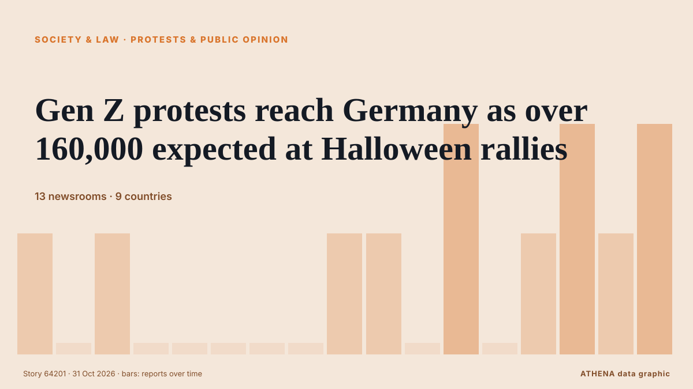

Общество, право и госполитика
Заголовки приводятся на английском языке, как они были опубликованы.

Протесты и общественное мнениеGen Z protests reach Germany as over 160,000 expected at Halloween rallies
Demands include opposing compulsory military service and investing in education amid rising costs. из The Straits Times
| 18 окт. | 30 |
|---|---|
| 19 окт. | 145 |
| 20 окт. | 45 |
| 21 окт. | 115 |
| 22 окт. | 222 |
| 23 окт. | 188 |
| 24 окт. | 120 |
| 25 окт. | 134 |
| 26 окт. | 321 |
| 27 окт. | 302 |
| 28 окт. | 280 |
| 29 окт. | 244 |
| 30 окт. | 264 |
| 31 окт. | 59 |
'We don't work for war': Dockworkers strike at 113 ports across 5 continents
Strikes take place in countries including Greece, France, Italy, India, Türkiye, Germany, opposing arms transfers to Israel. из Anadolu Agency (English)
Mass protests sweep Italy during nationwide strike
Grassroots union Unione Sindacale di Base called 24-hour general strike, with protests planned in more than 40 cities. из Express Tribune
Police secure Poland’s Constitutional Tribunal as protests erupt over court chief’s suspension
Dozens of protesters gathered on Friday (local time) to demonstrate against what they perceive as the wrongful suspension of the top court’s president by the government. из Stuff
Poland's president returns as court crisis escalates
Polish President Karol Nawrocki turned back to Poland while en route to Senegal after a far-right ally was suspended as head of the country's top court. из RTÉ News
Humanitarian aid being delivered to Oleshky, 25 buses with 750 seats ready for evacuation – Lubinets
Ukraine's Human Rights Commissioner, Dmytro Lubinets, said that 25 buses with a total capacity of 750 seats had been prepared to evacuate residents of Oleshky, along with ambulances for people with… из Ukrinform (English)
Probe into Andrew and Epstein’s Balmoral visit in ‘very early stages’ – police
Pictures previously released by the Department of Justice in the US appear to show Andrew and Epstein on a shooting trip at the estate. из Evening Standard (London)
Hong Kong has released the full report on Tai Po fire tragedy. Here’s all you need to know
We have put together 10 stories from our coverage on the full report of the Wang Fuk Court fire, released almost a year since the tragedy claimed 168 lives. из South China Morning Post
UN Refugee Agency Says 9 Million Need Extra Winter Help
The UN refugee agency highlights the need for extra winter assistance for nine million people across Ukraine, Syria, Lebanon, and Afghanistan, seeking $50 million in donations. из Arab News
South Korea seeks criminal charges, 3-year exam ban for cheating with AI glasses
Authorities are stepping up efforts to tackle cheating involving the devices following a series of incidents this year. из CNA (Channel NewsAsia)
Iran court sentences award-winning filmmaker Jafar Panahi to 5 years in prison
The 66-year-old won the top prize in the 2025 Cannes film festival for It Was Just An Accident. из The Straits Times
A helicopter with the EU force in Bosnia crashes, reportedly killing 3 and injuring 12
A Italian helicopter of the European Union peacekeeping force in Bosnia has crashed in the country’s north. из ABC News (International)
India helicopter crash in Himalayas kills 6
Police said efforts were under way to recover the bodies from the remote crash site, while the cause of the accident remained unknown. из Free Malaysia Today
Plaka Explosion: Three Suspects Linked to 80 Police Cases
Three men arrested over the Plaka explosion that killed six people are linked to nearly 80 previous police cases, according to Greek reports. из Greek City Times
New York state police to take over sexual assault complaints at Cornell University
New York state police will take over future sexual assault investigations at Cornell University, Governor Kathy Hochul said… из BusinessWorld
Mushroom killer Erin Patterson emotionless as appeal dismissed
Mushroom killer Erin Patterson is likely to die behind bars after Victoria’s Court of Appeal quashed her bid to overturn her triple murder conviction. из Sydney Morning Herald
Thousands of students and workers protest in Italy under heavy security
Thousands of students and workers took to the streets across Italy on Friday, calling for more school funding and relief from the soaring cost of living, amid a high police presence to avert possible… из The Local Italy
Spain’s transport minister refuses to resign over Toledo train crash as elections loom
Oscar Puente ruled out stepping down at a press conference at the Transport Ministry in Madrid on Friday. из The Olive Press
3 dead in rock spire collapse at tourist site in Turkiye's Cappadocia
A landslide triggered by heavy rainfall caused a rock spire to collapse in Turkiye’s Unesco World Heritage-listed Cappadocia region on Thursday, bringing the death toll to three, officials said. из Dawn
Spain working 'tirelessly' to identify train crash dead: PM
Relatives of the victims have endured an agonising wait for news as rescue crews sift through the wreckage of tangled metal and bodies are examined in morgues. из CNA (Channel NewsAsia)
U.K. police share update on probe into claims against Meghan Markle’s father
The Metropolitan Police acknowledged receiving a letter in 2019 regarding accusations about Meghan Markle’s father but did not share this information with other law agencies. из Arab News
High-speed train collision in Spain: 68 dead, more than 100 injured
MADRID: At least 10 people have died after a major collision involving two high-speed passenger trains in the central Spanish province of Toledo.The accident prompted the suspensi... из Oman Observer
Grieving Spain demands answers for latest rail disaster
One of Europe’s deadliest rail disasters this century struck south of Madrid on Wednesday morning, killing 69 people and injuring dozens more. из Free Malaysia Today
EU to slap new €2 fee on online shopping orders from outside Europe
The EU will charge an extra €2 "processing fee" on parcels imported into the European Union from Sunday November 1st in a bid to reduce the influx of cheap Chinese products bought on the internet. из The Local Austria
Ex-FBI officials charged with lying to Congress about Hunter Biden probe
Two former FBI officials are facing charges for lying to Congress about their involvement in the agency’s investigation into Hunter Biden’s laptop. из The Hill
Iran foreign minister offers condolences to Spain over deadly train crash
Portugal’s government announced that it has offered Spain support through organisations such as CP and Infraestruturas de Portugal, following the train crash in Toledo today that has claimed at least. из Portugal Resident
Budget will leave many Scots ‘staring down barrel’ of high energy bills – SNP
New analysis from the Scottish Parliament information Centre shows that more than 800,000 Schigher gas bills could see an increase. из Evening Standard (London)
Russell Brand denies all charges as he testifies at his rape and sex assault trial
The British actor-comedian acknowledged in a London court on Wednesday that he had been obsessed with sex as a younger man, but denied multiple charges of rape and sexual assault, saying the claims… из PBS NewsHour
Xi extends condolences over deadly train collision in Spain
Associated Press Of Pakistan PM expresses grief over devastating train collision in Spain ISLAMABAD, Oct 28 (APP): Prime Minister Muhammad Shehbaz Sharif, Wednesday, expressed his profound grief over… из APP (Associated Press of Pakistan)
US fires senior army general in latest ouster: reports
The United States has fired a top military planner, US media reported, in a surprise shake-up as President Donald Trump appears to be preparing to resume large-scale strikes against Iran. из Al-Monitor
92-year-old US judge handling Maduro case dies
His death was confirmed by an official at the United States District Court, Southern District of New York, where he presided. из Channels TV
French Senate Passes Bill to Make Protesters Pay for Unrest Damage
However critics warned the move could curb the right to protest. из The Straits Times
10 tourists killed in fire at Cox’s Bazar resort
Fire erupts at a resort in Cox’s Bazar, tourist hub in southeastern Bangladesh, fire service confirms. из Express Tribune
China adopts measures to tighten discipline in Communist Party
The fifth plenum of the Central Committee, led by President Xi Jinping, adopted a decision on "advancing full and rigorous governance of the party", which includes reducing corruption among cadres… из CNA (Channel NewsAsia)